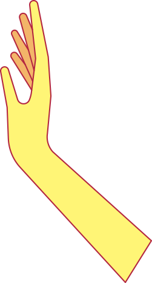
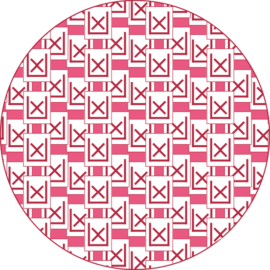
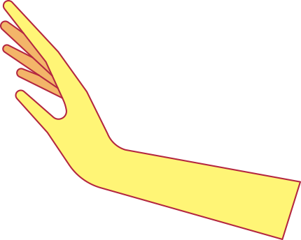
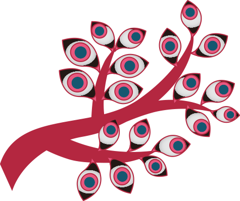
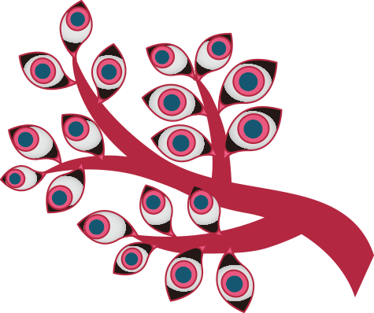
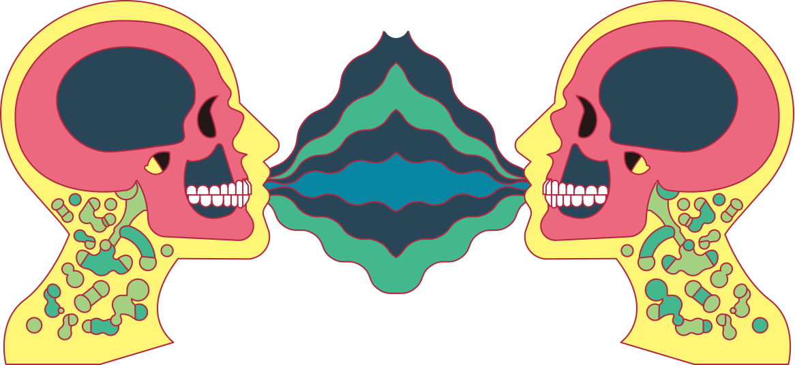
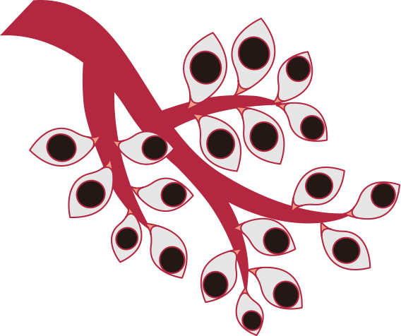
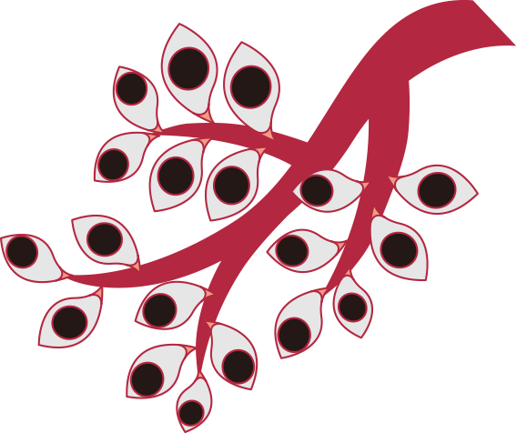
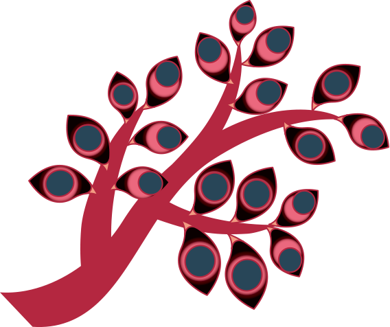
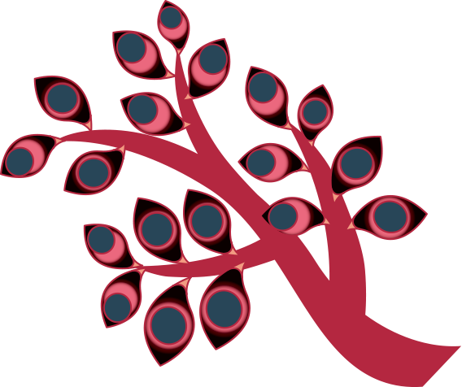
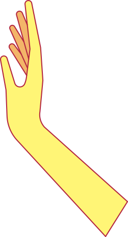
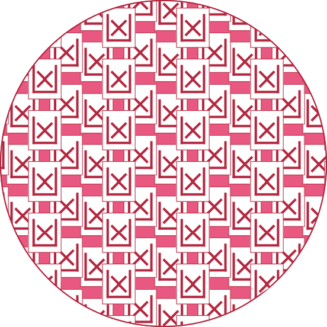
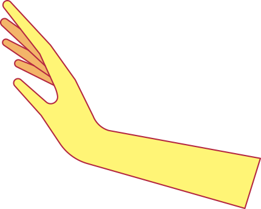
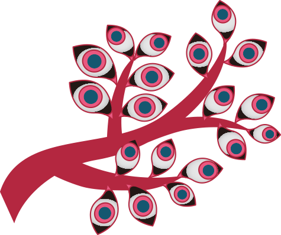
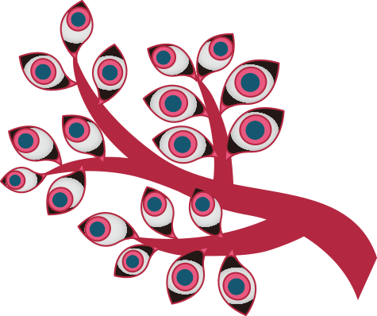
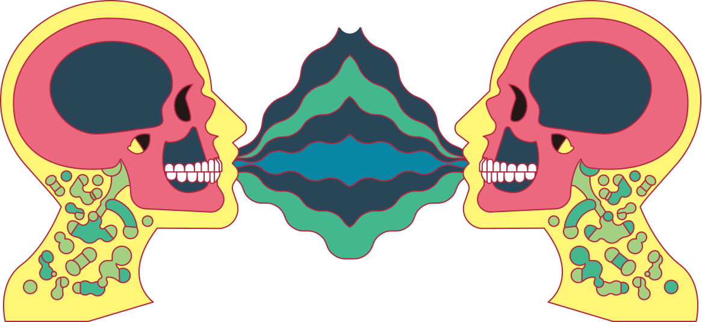
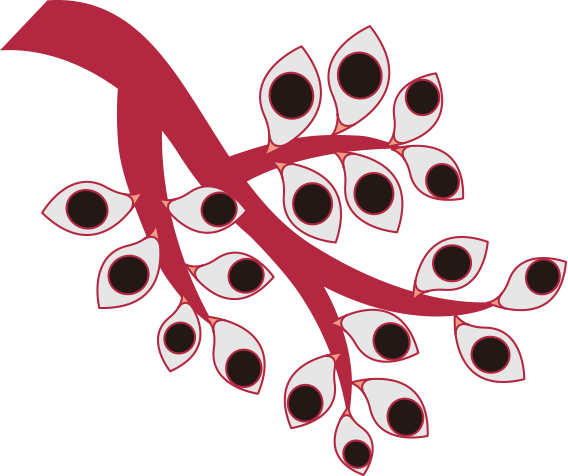
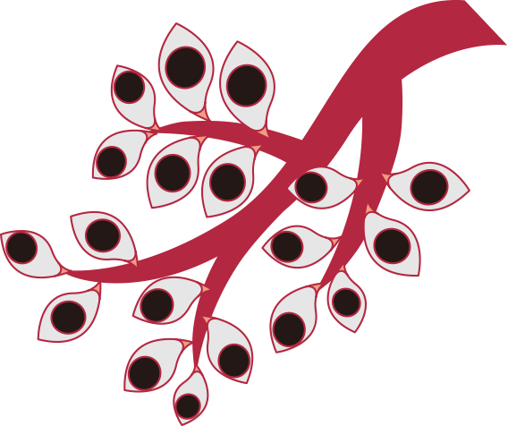
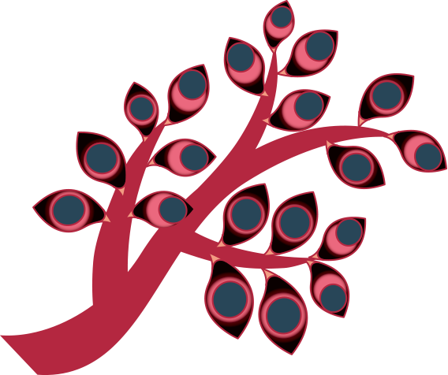
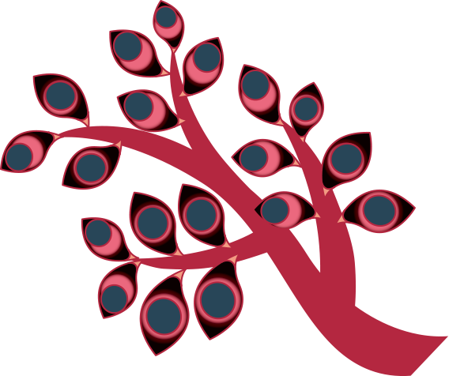
신기하게도 흉둥이의 가죽은 투명해서 집어삼킨 사람의 형태가 다른 사람에게도 그대로 보인대.
다음
근데 어찌나 착 달라붙어 있는지,
겉으로 봤을 때는 일반 사람하고 똑같아서 흉둥이인지 아닌지 구분하기가 쉽지 않대.
다음
가죽도 아주 질겨서 혼자서는 쉬이 빠져나오지 못한다고 하더라고.게다가 삼켜진 사람은 흉둥이에게 생각과 행동이통제되어서 다른 사람에게 도움을 요청하기도 쉽지 않대.
다음
흉둥이는 삼켜진 사람의 입으로 또 다른사람에게 새끼를 까며 기생한다는데, 그래서 그런지 사람들에게 쉴 새 없이 말을 한다고 하더라고.
다음
주로 자기가 세상에서 제일 불행하고 힘든 사람인 듯이 신세 한탄을 많이 한대.
마침